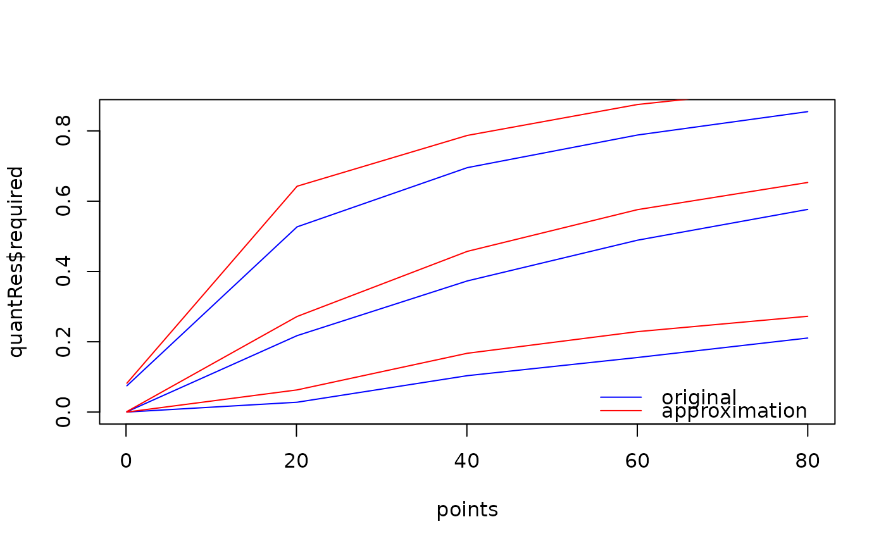

It is recommended to use set.seed before, in order
to be able to reproduce the resulting approximating model exactly.
approximate(object, model, data, ...) # S4 method for Samples approximate( object, model, data, points = seq(from = min(data@doseGrid), to = max(data@doseGrid), length = 5L), refDose = median(points), logNormal = FALSE, verbose = TRUE, ... )
| object | the |
|---|---|
| model | the |
| data | the |
| ... | additional arguments (see methods) |
| points | optional parameter, which gives the dose values at which the approximation should rely on (default: 5 values equally spaced from minimum to maximum of the dose grid) |
| refDose | the reference dose to be used (default: median of
|
| logNormal | use the log-normal prior? (not default) otherwise, the normal prior for the logistic regression coefficients is used |
| verbose | be verbose (progress statements and plot)? (default) |
the approximation model
approximate,Samples-method: Here the ... argument can transport additional arguments for
Quantiles2LogisticNormal, e.g. in order to control the
approximation quality, etc.
# Create some data data <- Data(x = c(0.1, 0.5, 1.5, 3, 6, 10, 10, 10), y = c(0, 0, 0, 0, 0, 0, 1, 0), cohort = c(0, 1, 2, 3, 4, 5, 5, 5), doseGrid = c(0.1, 0.5, 1.5, 3, 6, seq(from = 10, to = 80, by=2)))#> Warning: Used default patient IDs!# Initialize a model model <- LogisticLogNormal(mean = c(-0.85, 1), cov = matrix(c(1, -0.5, -0.5, 1), nrow = 2), refDose = 56) # Get posterior for all model parameters options <- McmcOptions(burnin = 100, step = 2, samples = 2000) set.seed(94) samples <- mcmc(data, model, options) # Approximate the posterior distribution with a bivariate normal # max.time and maxit are very small only for the purpose of showing the example. They # should be increased for a real case. set.seed(94) posterior <- approximate(object = samples, model = model, data = data, logNormal=TRUE, control = list(threshold.stop = 0.1, max.time = 1, maxit = 1))